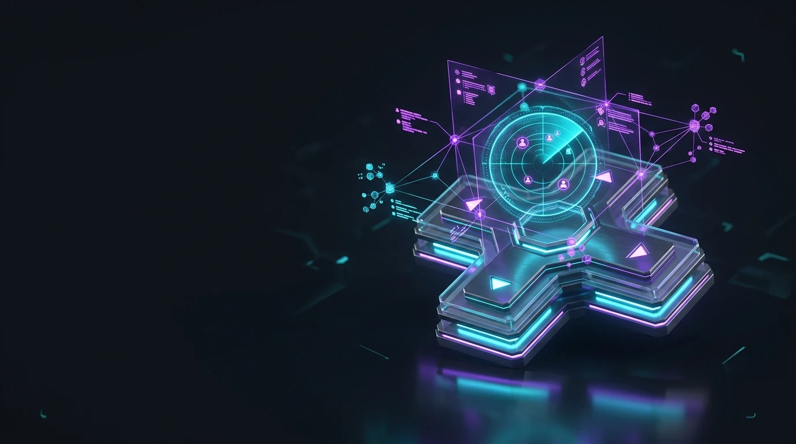

Форум
Обговорюй ігри та обмінюйся досвідом українською. Спільні теми допомагають знаходити людей зі схожими інтересами.

Українська ігрова спільнота
Знаходь напарників, ділися досвідом і тримай корисні матеріали під рукою.
Обговорюй ігри та обмінюйся досвідом українською. Спільні теми допомагають знаходити людей зі схожими інтересами.
Тримай поради й корисні матеріали під рукою. Збирай знання про улюблені ігри в одному місці.
Обирай гру, платформу та формат сесії. Знаходь лобі, що відповідає твоїм планам.
Обери формат серед прикладів лобі. Це навчальний інтерфейс: реєстрація та реальні заявки ще не підключені.
Демо-лобі 01
Потрібні 2 гравці · PC · мікрофон
Навчальна картка · неактивне лобі
Умови приєднанняДемо-лобі 02
Потрібен 1 гравець · PC · командна гра
Навчальна картка · неактивне лобі
Умови приєднанняДемо-лобі 03
Потрібні 3 гравці · PC · спільний світ
Навчальна картка · неактивне лобі
Умови приєднанняДемо-лобі 04
Потрібні 2 гравці · будь-який ранг · мікрофон
Навчальна картка · неактивне лобі
Умови приєднанняДемо-лобі 05
Потрібні 2 гравці · PC · творчий режим
Навчальна картка · неактивне лобі
Умови приєднанняДемо-лобі 06
Потрібні 2 гравці · консоль · командна гра
Навчальна картка · неактивне лобі
Умови приєднанняДо початку матчу домовтеся про голосовий канал і ролі. Коротко повідомляйте про позиції та плани, поважайте інших гравців.
Звірте платформи, кількість учасників і бажаний режим. Домовтеся про тривалість сесії, щоб усім було зручно грати разом.
Узгодьте версію гри, правила сервера та місце старту. Розподіліть перші завдання й регулярно зберігайте резервну копію світу.
Gaming Hub поєднує форум, Wiki та пошук напарників. Проєкт створюється для українськомовних гравців, яким потрібні зрозумілі домовленості та спільний простір для досвіду.
Counter-Strike 2 — офіційний трейлер Valve. Познайомся з однією з ігор, для яких у Gaming Hub передбачено пошук команди.
Площа Ринок — умовне місце для офлайн-зустрічі в навчальному проєкті. Дату та місце реальної зустрічі потрібно узгоджувати окремо.
Переглянь приклади лобі та обери відповідний формат. У цій версії можна дослідити інтерфейс; для реального приєднання надалі потрібні обліковий запис і серверна частина.
Переглянути лобіПрацюють навігація, мобільне меню, довідкові матеріали, відео, карта й погодний віджет. Лобі демонстраційні, персональні дані не збираються.